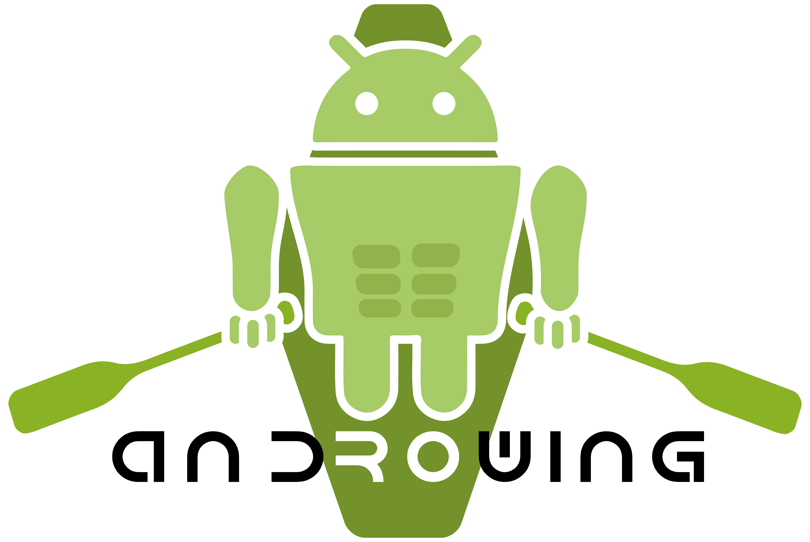

Expériences

Messagerie instantanée utilisant socket.io, nodejs, indexdDB, html, css, js, service worker, pwa. Les messages ne sont reçus que lorsque vous êtes connectés donc pas enregistré en backend, mais seulement en frontend avec indexedDB.
Dans le cadre du développement de l’activité AviFit, le club souhaite se doter d’un outil permettant aux licenciés de se challenger. L’idée est de pouvoir motiver les licenciés grâce un système de suivi de performance. Le besoin est une application mobile que les utilisateurs renseignent à la fin de chaque séance et qui leur permet d’avoir un suivi de performance, comparaison à d’autre utilisateur et réussite de challenge.
